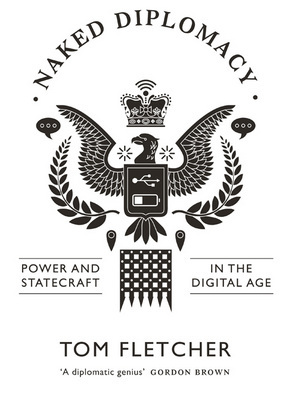
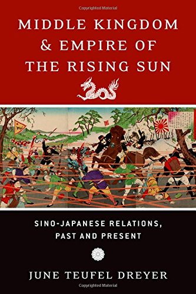
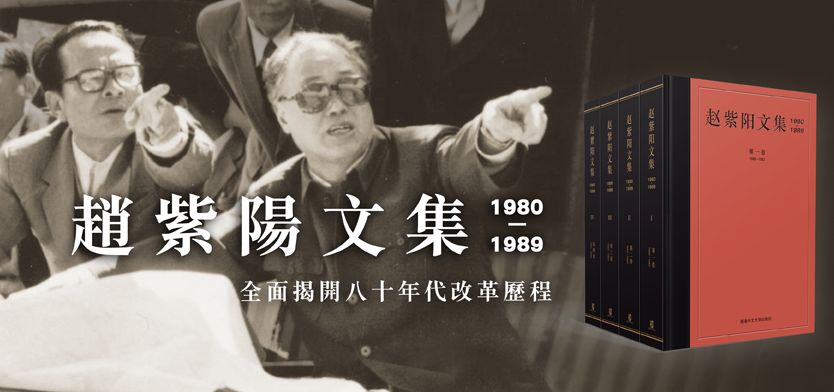
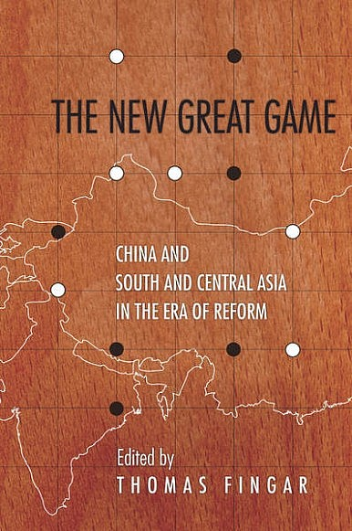
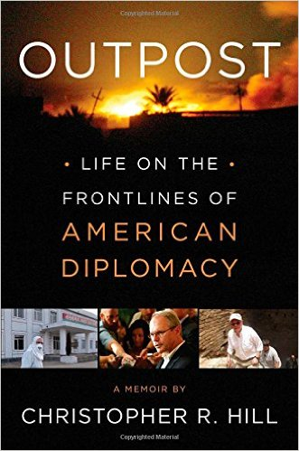
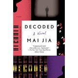

|
As a new school year and diplomatique season gets under way, it’s time to turn our attention to some scholarly works on all our favorite subjects, diplomacy and Diplomacy. This time I have 4 new titles from a variety of sources, an almost golden oldie and two bonus items for you. Enjoy! Naked Diplomacy: Power and Statecraft in the Digital Age, Tom Fletcher, 2016  Tom Fletcher’s career peaked with his service as Ireland’s ambassador to Lebanon from 2011 – 2015 after a 35-year career in the Irish diplomatic service. The review, written by Ireland’s current ambassador to London, Dan Mulhall, is, as might be expected, a glowing tribute to his former colleague. Mostly it’s about two hot-button topics among professional dippers today, public diplomacy and digital media as its enabling instrument. This is the kind of book most former diplomats who can find a publisher write during the last year between their final overseas posting and their official retirement. The rest of their time is spent sorting their professional papers, debriefings, and doing their retirement paperwork. Middle Kingdom & Empire of the Rising Sun, June Terfel Dreyer, 2016  June Teufel Dreyer brings some solid academic and research credentials with Harvard, the Library of Congress, the US Navy, the University of Miami and the FPRI. The fact that her textbook on China’s political system is in its ninth edition says volumes about her work. Basically this is a book about Sino-Japanese relations, past and present. It’s hard to recall given China’s current dominance in Asia that for most of the 20th century that Japan was the more powerful of the two, but before that China was. The focus of the book is on those hundred years when Japan was the superior of the two rivals. Still, her broad view of their relations in many areas gives considerable insight into what’s going on today. This is an example of history going hand-in-hand with current events. Collected Works of Zhao Ziyang, 1980 – 1989, Chinese University Press, 2016  My interest in internal Chinese politics covers over a half-century, roughly for the quarter of a century prior to the Tiananmen Square protests, massacre or incident, (depending on your viewpoint), and the quarter of a century since. If there was a hero at that event, besides Tank Man, it was Zhao Ziyang, the Chinese reformer leader who dared to object to the crack-down on the students, and spent years under house arrest as a result. This multi-volume work is a collection of his writings prior to the events of that June. Heavy on ideology and political jargon it still offers a valuable insight into the causes of the event. It definitely needs to be read in conjunction with Prisoner of the State, Zhao’s Memoirs. The book offers insights into what’s going on in China today which is, when all is said and done, nothing more than a replaying of the ancient struggle in China between those who ruled and those who were ruled. The bottom line of that was the agreement that the rulers would provide a decent life for the ruled and the ruled would give their consent to be ruled. Today, as more and more Chinese travel in person or via the internet, more and more of them no longer want rulers, they want leaders who can solve today’s problems, something the Party and Government are having a hard time doing. Only time will tell how it will all play out. The New Great Game, Thomas Fingar, 2016  Fingar has used the revolving door between government service (mostly for various intelligence agencies) and Stanford University (a variety of research positions, but not academic in an educational sense). This book consists of a series of essays by various contributors on the topic of China and South and Central Asia in the Era of Reform. or Chinese Diplomacy in the 21st Century. I would guess it is a compilation of papers from a scholarly gathering at Stanford and has all the pluses and minuses of such projects. Anyone who has read Henry Kissinger’s book On China will immediately see the link between that work and this one, even if it is a superficial one. Still, any Dipper’s eye would be drawn to the cover’s map of South and Central Asia and China dotted with Go pieces. Cute. Outpost: Life on the Frontlines of American Diplomacy, Christopher Hill, 2014  Christopher Hill’s book, published in 2014, is almost old enough to be considered “a history” instead of “current affairs.” Either way it is another product by a professional American diplomat who served in six administrations, from Carter to Obama, in positions ranging from Peace Corps volunteer to Assistant Secretary of State for East Asian and Pacific Affairs; and in places as diverse as The Balkans, Iraq and North Korea. While it’s not exactly a “kiss and tell” memoir it is both informative and entertaining. Perhaps what comes through most is Hill’s diplomatic ability to harpoon both whales and minnows. Decoded: A Novel by Mai Jia, 2002  If you liked Tom Clancy, are a fan of Dan Brown or know who David Hoffman is you’ll probably enjoy reading Mai Jia’s first novel, Decoded, or his latest, In the Dark. Mai Jia has often been compared to Dan Brown. Whether that’s because it took him 10 years to write his first, million word plus novel that sold millions of copies before becoming a successful television series; or because his second novel, published a year later, was even more successful; or perhaps just because he just had a good agent that liked Dan Brown. You can learn more about him here. You can find Decoded in English on Amazon.com or, if you have lots of time on your hands, you can watch the 41 chapter television version on viki.com. Asian videos take a bit of getting used to. You actually have to think while watching them but if you do get into them, be warned. They’re addictive. Bean Paste and Red Pepper Paste: On the Runs from Kim Jong-Un by Thae Yong-Ho, 2017 ETA Something of a first for me, I’ve written a review of a book that hasn’t even been written, let alone published ye, but mark my words, it will happen. I’ve already assigned the book a working title “Bean Paste and Red Pepper Paste: On the Runs from Kim Jong-Un”. The author’s name may be found in several forms depending on which version of Korean is being used, such as Thae Yong-Ho or Tae Young-Ho. If the name Thae Yong-Ho doesn’t ring a bell with you, then you haven’t been reading the international media lately. Almost every news source worldwide has covered the story of his defection from his post as the second-ranking North Korean diplomat in London and the highest ranking North Korea to defect to South Korea. The above picture shows the North Korea embassy in western London and it’s worth doing a wiki search and Google map search to get a feel for what the stage of Thae’s escape was. You can learn more here. Keep in mind this is Seoul’s side of the story and it’s obviously intended to persuade other high-ranking North Koreans to defect. It’s not about freedom, democracy or unification. It’s about paying the rent, schooling the kids, and a better life-style. That’s the message South Korea is sending. Here’s a UK press take on what happened. Whether Thae will be allowed to tell his story only the South Korean government knows. I’m sure they’ll want to use it for propaganda reasons but whether they’ll want to let him actually profit from it I can’t say. I can’t help but wonder what Matt Bissonnette thought when he read this story as he started paying that $6.8M settlement to the US Government for his book publishing rules violation.
If you wish to e-mail feedback on this article to the author, and clicking on the envelope above does not work for you, feel free to use the "Dear DP..." mail interface. |